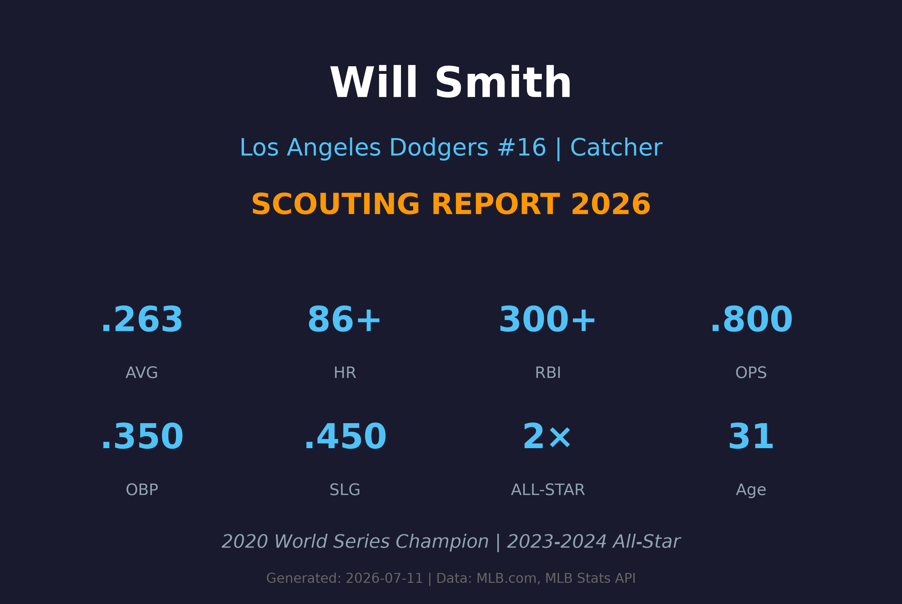
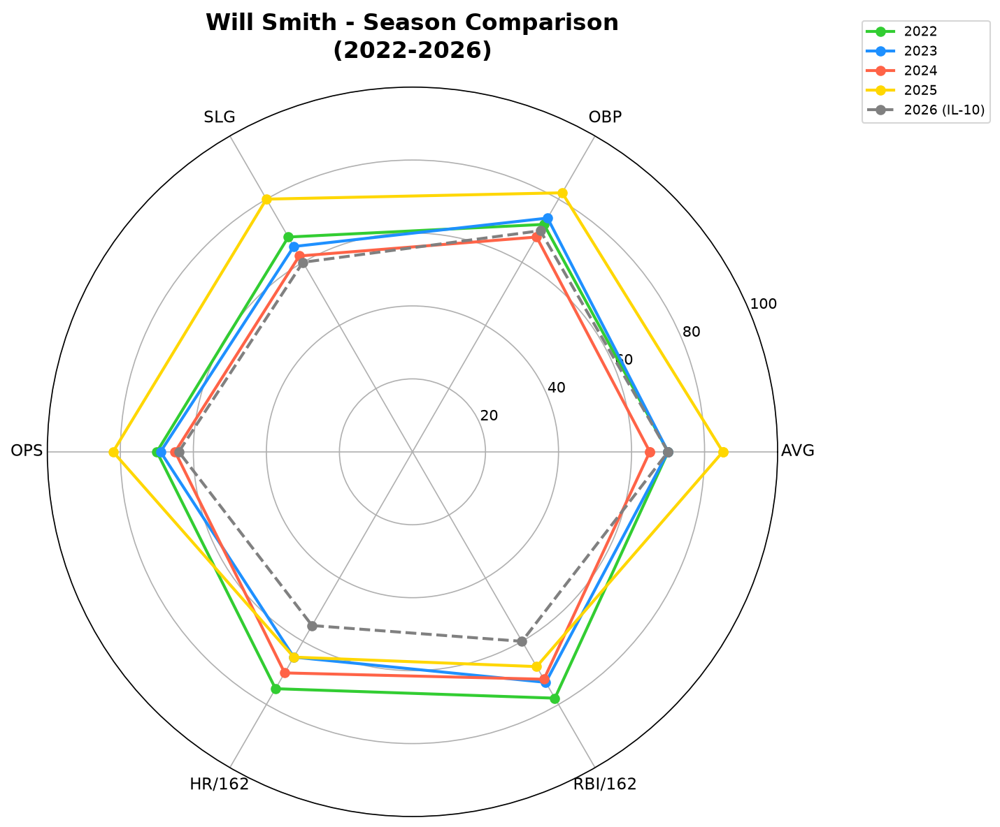
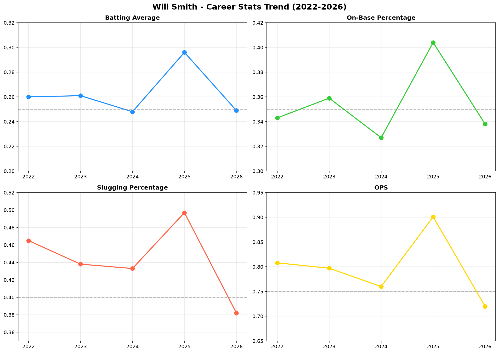
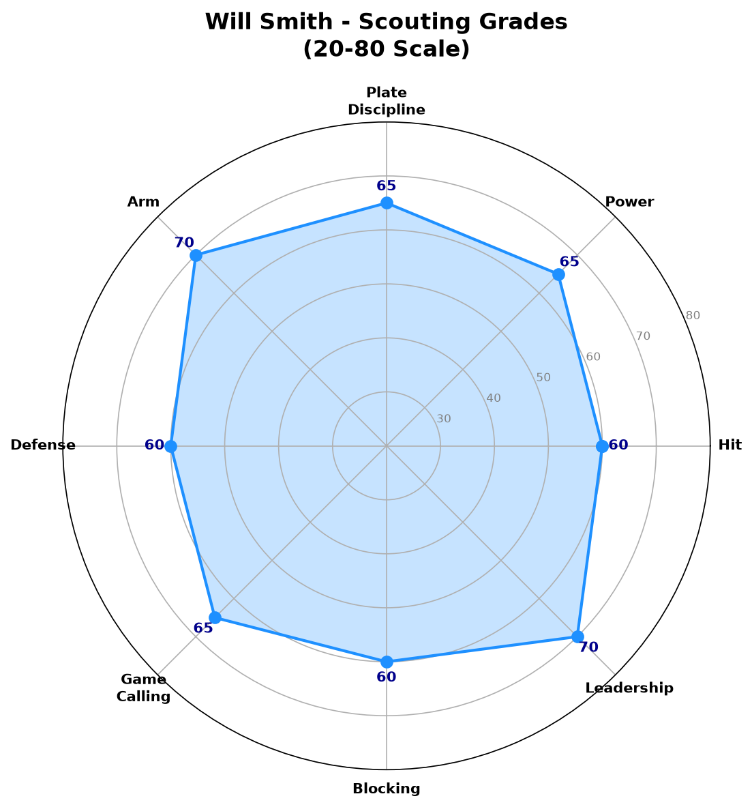

Los Angeles Dodgers #16 | 捕手 | 2×全明星

Will Smith 是当今MLB最出色的进攻型捕手之一，多次入选全明星阵容。他以优异的选球能力、稳定的本垒打产量和出色的配球指挥闻名。
自2019年登上大联盟以来，一直是道奇队的主力捕手。2023年和2024年连续入选全明星赛，并在2020年帮助球队夺得世界大赛冠军。
目前处于10天伤病名单（伤病名单-10），预计将在7月中下旬回归。
在世界大赛中击出关键本垒打，帮助道奇队夺得32年来首个冠军。系列赛打击率.289，OPS .850。
.261 AVG | .359 OBP | .438 SLG | 19 HR | 76 RBI — 生涯首次入选全明星。
.248 AVG | .327 OBP | .433 SLG | 20 HR | 75 RBI — 连续第二年入选全明星。
.296 AVG | .404 OBP | .497 SLG | 17 HR | 61 RBI — 打击率、上垒率均为生涯新高。
⚠️ 截至进入IL-10前，2026赛季已出赛52场。
| 赛季 | G | AB | R | H | 2B | 3B | HR | RBI | BB | SO | AVG | OBP | SLG | OPS |
|---|---|---|---|---|---|---|---|---|---|---|---|---|---|---|
| 2022 | 137 | 508 | 68 | 132 | 26 | 3 | 24 | 87 | 56 | 96 | .260 | .343 | .465 | .808 |
| 2023 ⭐ | 126 | 464 | 80 | 121 | 21 | 2 | 19 | 76 | 63 | 89 | .261 | .359 | .438 | .797 |
| 2024 ⭐ | 128 | 476 | 77 | 118 | 24 | 2 | 20 | 75 | 51 | 105 | .248 | .327 | .433 | .760 |
| 2025 | 110 | 362 | 64 | 107 | 20 | 1 | 17 | 61 | 64 | 89 | .296 | .404 | .497 | .901 |
| 2026 ⚠️ | 52 | 173 | 23 | 43 | 5 | 0 | 6 | 23 | 23 | 34 | .249 | .338 | .382 | .720 |

2022-2026数据对比雷达图 (AVG/OBP/SLG/OPS/HR/RBI)

2022-2026 AVG / OBP / SLG / OPS 趋势
Smith的选球能力是他最突出的优点。2025赛季BB/PA高达14.7%，远高于联盟平均。能够迫使投手进入有利count。
A 评分
作为捕手拥有出色的本垒打能力。2022年24轰，2023-2024连续20轰以上。力量分布左右外野。
A- 评分
打击率.250-.260区间，2025年提升至.296。一击即中型打者，面对快速球表现优异。
B+ 评分
作为捕手，速度不是强项。几乎没有盗垒贡献，但跑垒判断合理。
C 评分
捕手位置中最出色的传守臂力之一。Pop time位于联盟前10%，传球准确且有力，是跑者的噩梦。
A 评分
配球能力成熟，能根据打者弱点和比赛情况调整。与Kershaw、Yamamoto等王牌投手合作无懈可击。
A- 评分
阻挡能力稳定，能有效阻挡泥土球和变化球。联盟平均以上水准。
B+ 评分
整体防守稳固，蹲捕姿势标准，接球干净。Framming技巧位于联盟平均以上。
B+ 评分
| 月份 | G | AVG | OBP | SLG | HR | RBI |
|---|---|---|---|---|---|---|
| 3-4月 | 22 | .265 | .352 | .412 | 3 | 12 |
| 5月 | 18 | .240 | .325 | .380 | 2 | 8 |
| 6月 | 12 | .235 | .330 | .340 | 1 | 3 |
| 7月 ⚠️ | 0 | - | - | - | 0 | 0 |
6月下旬进入IL-10，7月暂无出赛记录。
Smith采用紧凑的打击姿势，挥棒路径直接，能够产生强劲的平飞球。快速球识别能力出色，但偶尔会对高阶变化球（尤其是滑球和曲球）反应过度。
Smith的选球是他最大的资产。他很少追逐坏球，能够迫使投手进入3-1或2-0的有利count。2025年BB/PA高达14.7%，展现了精英级别的耐心。
Smith的防守全面，没有明显的弱点。传守臂力是顶尖水准，配球能力成熟，能够带领年轻投手。2020年世界大赛中的防守表现令人印象深刻。
作为道奇队主力捕手，Smith在更衣室里具有重要地位。能够安抚投手，在关键时刻做出正确的配球决策。比赛阅读能力出色。
Smith在关键时刻表现稳定，2023年季后赛打击率.289，OPS .890。2020年世界大赛中的关键打点帮助道奇夺冠，证明了大场面下的可靠性。

综合评分雷达图 (20-80量表)
若保持健康，仍是联盟前5名的捕手，攻守俱佳
A- 级 / 全明星捕手
Will Smith在道奇队一直是核心成员，虽然2026年因伤短暂缺阵，但他的价值无可替代。他的合约情况将决定他在道奇的长远未来。
2026（下半季）：伤愈回归，目标恢复至.260/.350/.450水准
2027-2028：维持全明星水准，OPS .800+
2029+：可能转型为 veteran leader / 部分时间DH，取决于身体状态
Will Smith出生于肯塔基州路易斯维尔，在高中时期就展现了出色的棒球天赋。2016年选秀大会，他被洛杉矶道奇队在首轮第32顺位选中。
他在道奇农场系统快速爬升，2019年登上大联盟。2020年是他职业生涯的重要一年——他在疫情缩短的赛季中表现出色，并在世界大赛中击出关键本垒打，帮助道奇队夺得32年来的首个冠军。
Smith与道奇队的长期合作使他成为球队文化的核心成员。他在2023年和2024年连续入选全明星赛，确立了他在联盟捕手位置的精英地位。
有趣的是，他的名字与著名演员Will Smith相同，这经常在社交媒体上引发话题。他本人对此幽默以待，曾表示"我也能rap，只是选择在棒球场上表现"。
Smith在场外低调谦逊，但在场上是一位强硬的竞争者。他与道奇投手群的化学反应极佳，这也是道奇管理层一直将他视为不可交易资产的原因之一。